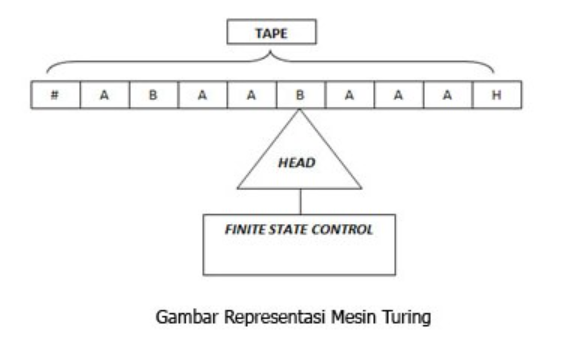
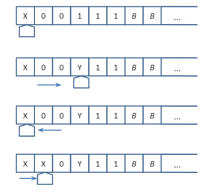
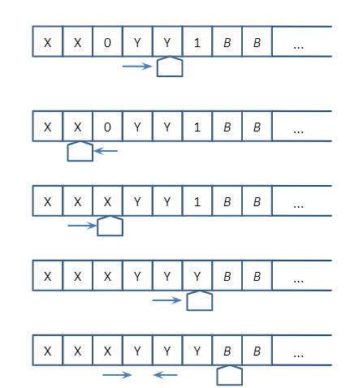

Mesin turing adalah model komputasi teoritis yang ditemukan oleh Alan Turing, berfungsi sebagai model ideal untuk melakukan perhitungan matematis. Walaupun model ideal ini diperkenalkan sebelum komputer nyata dibangun, model ini tetap diterima kalangan ilmu komputer sebagai model komputer yang sesuai untuk menentukan apakah suatu fungsi dapat selesaikan oleh komputer atau tidak (menentukan computable function). Mesin Turing terkenal dengan ungkapan " Apapun yang bisa dilakukan oleh Mesin Turing pasti bisa dilakukan oleh komputer."
Sebuah mesin turing terdiri atas barisan sel tersusun berupa pita yang dapat bergerak maju mundur, komponen aktif baca/tulis pita yang memiliki status perhitungan serta dapat mengubah/menulisi sel aktif yang ada di pita tadi, dan suatu kumpulan instruksi bagaimana komponen baca/tulis ini harus melakukan modifikasi terhadap sel aktif pada pita, serta bagaimana menggerakkan pita tersebut. Pada setiap langkah dalam komputasi, mesin ini akan dapat mengubah isi dari sel yang aktif, mengubah status dari komponen baca/tulis, dan mengubah posisi pita ke kiri atau ke kanan.
Jauh sebelum lahirnya program komputer, Alan Turing pada tahun 1936 telah mengeluarkan gagasannya berupa model mesin abstrak sebagai alat mekanik untuk mengerjakan prosedur yang efektif. Model ini disebut Mesin Turing.
Mesin turing dapat diadaptasi untuk mensimulasi logika dari setiap algoritma oleh karena itu cara kerja mesin turing adalah ekivalen dengan cara kerja komputer sekarang ini dan mesin turing juga ekivalen dengan problema komputasi matematika. Mesin turing tidak ditujukan sebagai teknologi komputasi praktis tetapi lebih sebagai eksperimen pemikiran yang mewakili sebuah mesin komputasi. Mesin turing membantu para ilmuan komputer memahami batas-batas komputasi mekanis.
Sebagai input dari mesin turing adalah kata atau untai atas suatu alfabet T. Mesin turing berhenti dengan keadaan menerima atau menolak untai. Kadang-kadang terjadi pula perulangan atau looping tak terhingga.

Keterangan :
> Tape : Tempat diletakannya inputan yang berupa kata/untai.
> Head : Membaca dan menulisi sel pita mesin turing, bisa bergerak ke kiri atau ke kanan.
> Finite State Control (FSC) : Otak dari Turing Machine, diimplementasikan dari algoritma pengenalan kalimat.
1. Mesin Turing memiliki pita berupa array sebagai memori yang dapat menyimpan sebuah simbol tunggal.
2. Mesin Turing memiliki head sebagai penunjuk posisi yang sedang diakses ke pita.
3. Head dapat bergerak ke kanan atau ke kiri pada pita sesuai fungsi transisi yang ditetapkan untuk membaca inputan.
4. Head juga dapat melakukan penulisan atau mengubah isi pita.
Mesin Turing didefinisikan sebagai 7 tuple M = {Q, S, G, S, F, Ь, ∆}
Q: himpunan hingga state,
S: alfabet input,
G: simbol pada pita (meliputi pula blank)
S: state awal, S Î Q
Ь: simbol kosong (blank) (bukan bagian dari S )
∆: fungsi transisi
F: state akhir, F Î Q
1. Lihat state semula dan simbol yang ditunjuk head
2. Berdasarkan fungsi transisinya, tentukan :
> State berikutnya
> Gerakkan head ke kanan dan ke kiri
3. Bila dari pasangan state dan simbol yang ditunjuk head tidak ada lagi fungsi transisinya, berarti mesin turing berhenti.
4. Bila Mesin Turing berhenti di dalam state final (F), berarti input diterima. Sebaliknya jika mesin berhenti tidak pada state akhir, maka berarti inputan tersebut ditolak.
Mesin Turing M akan digunakan untuk mengenali bahasa L = {0n1n | n ≥ 1}. Contoh string di dalam L misalnya
01, 0011, 000111, 00001111, dst.
Cara kerja mesin turing untuk mengenali bahasa L ditanyakan dengan algoritma berikut :
1. Ganti simbol ‘0’ paling kiri dengan simbol ‘X’.
2. Gerakkan head ke kanan hingga dijumpai simbol ‘1’.
3. Ganti simbol ‘1’ paling kiri dengan simbol ‘Y’
4. Gerakkan head ke kiri hingga dijumpai simbol ‘X’
5. Geser head ke kanan (akan diperoleh ‘0’ paling kiri).
6. Kembali ke langkah 1.
> Jika pada saat bergerak ke kanan untuk mencari ‘1’ , mesin Turing M menjumpai simbol B, maka berarti banyaknya ‘0’ lebih dari banyaknya ‘1’.
Kesimpulannya, string masukan tidak dikenali.
> Jika pada saat bergerak ke kiri M tidak menjumpai lagi ‘0’, maka M memeriksa apakah masih ada ‘1’. Bila habis maka string diterima (dikenali).
> Jika sebuah string diterima (dikenali), maka mesin Turing M berhenti. Untuk string yang tidak dikenali (ditolak) ada kemungkinan M tidak berhenti (looping).
Contoh : String masukkan adalah 000111


Kesimpulan : String 000111 dikenali oleh mesin M.
Copyright © 2020 | Irfadiana Nurhasanah